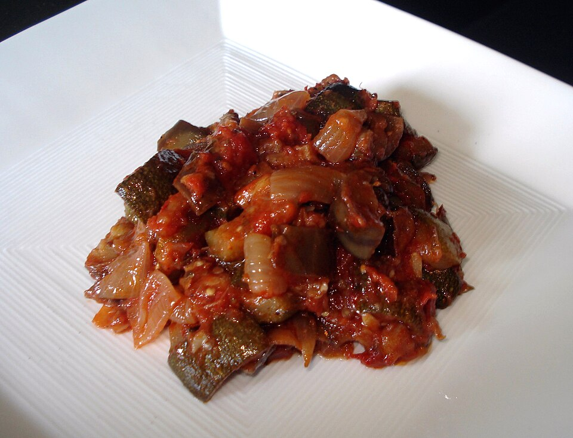
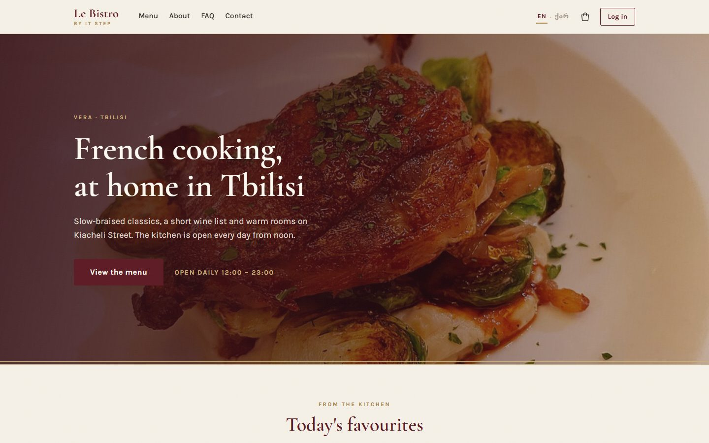
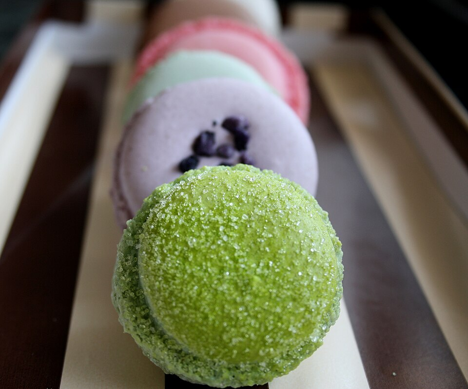
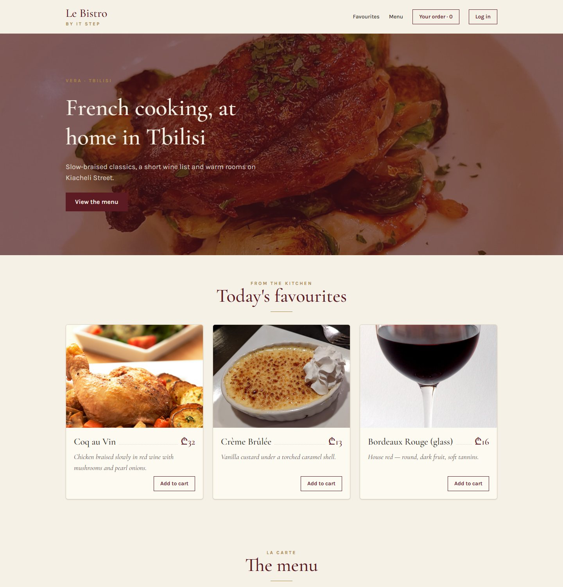
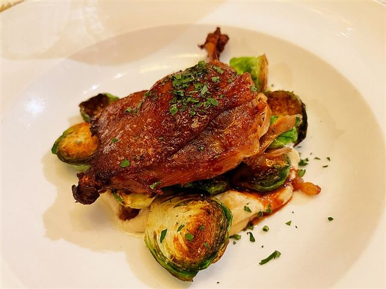
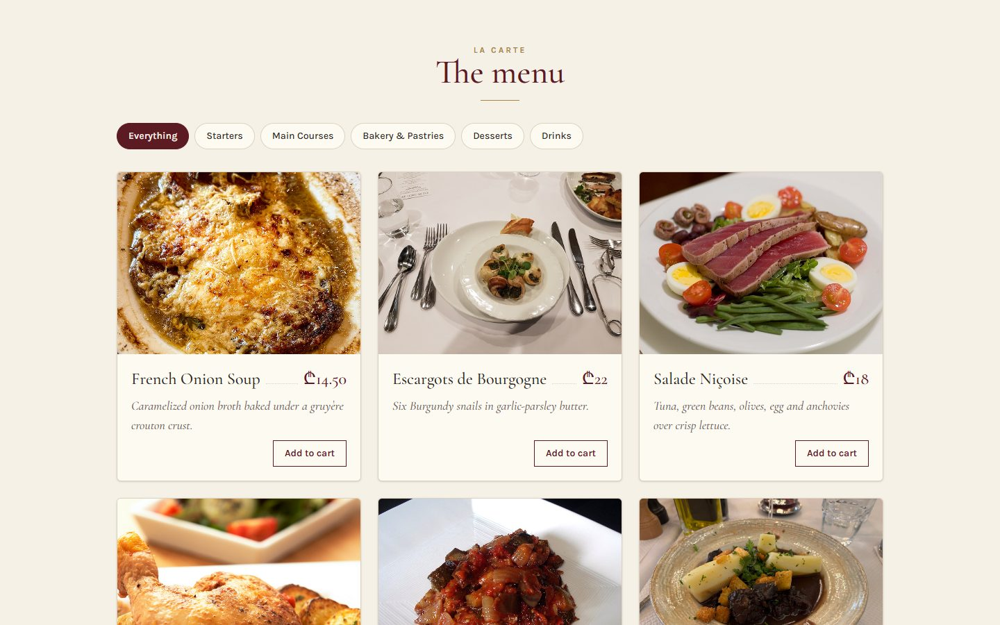

Bonjour!
L27 React · lecture 2 · Le Bistro track 1 of 5
Mise
en place
Components and props. A chef sets out every ingredient in its own bowl before cooking. We set out every piece of the page in its own component before building it.
- Theme
- Components, props, lists
- Le Bistro today
- Home page and menu
- Your project
- v0.1 · a static catalog
- Length
- 2 hours · one break

Le Bistro · L27 · 120 minutes
Today's menu
- AccueilHello Le Bistro and your own project7′
- ApéritifQuestions from the TypeScript lecture6′
- EntréeProblem 1 25 dishes, 25 copies5′
- PlatComponents the page as a tree24′
- AtelierClasswork 1 your project's skeleton15′
- Pause caféBreak music on, screens off10′
- Second platProblem 2 and props one card, many dishes25′
- AtelierClasswork 2 with AI prompt it, then check it15′
- MasterclassOne prompt, the whole Le Bistro CRAFT, then the short version8′
- DessertWrap-up recap, homework, next time5′
Route Five lectures, one restaurant
Le Bistro, lecture by lecture

L27 · today
Components
Home page and menu, built from reusable pieces and a data file.

L28
State
Add to cart works. Chips filter, search finds.

L29
Effects
The real menu from the API. A cart that survives a refresh.

L30
Routing
Pages with their own address. Login and staff-only doors.

L31
Context
One cart and one session for the whole site.
grows the same way v0.1catalog from a data file v0.2cart, filters, search v0.3real API, saved cart v0.4pages, login, guards v0.5context and reducer
My project Built live, on this screen
Meet Le Bistro
A real restaurant site made at IT Step, with a real API behind it. We rebuild it in React, one lecture at a time. I type it here, then you build the same idea in your own project.
- Live site
- srms.stepacademy.ge
- API
- srmsapi.stepacademy.ge, docs at /swagger
- Today
- The home page and the menu. No clicks yet.

Your project Starts today, presented at Demo Day
A shop of your own
Pick one theme. The data comes from dummyjson.com: free, no key, and it even has login.
Watch boutique
mens-watches womens-watches
Cart, wishlist, sizes.
Beauty bar
beauty skin-care fragrances
Cart, filters by brand.
Furniture house
furniture home-decoration
Cart, room filters.
Tech store
smartphones laptops tablets
Cart, compare list.
Fashion street
tops womens-dresses mens-shoes
Cart, size filter.
Recipe book
/recipes with cuisine and meal type
A meal plan instead of a cart.
Not a restaurant.
Le Bistro is mine, the shop is yours. Another idea or another free API? Show it to me first.
Your project What to build, and when
One step every lecture
| Lecture | Le Bistro, on screen | Your shop, at home |
|---|---|---|
| L27 | Home page and menu from components | v0.1 Header, hero, product grid from a data file. Live on Vercel. |
| L28 | Cart, stepper, filters, search | v0.2 Cart (or meal plan), category filter, search box. |
| L29 | Real API, loading, saved cart | v0.3 Products from DummyJSON, loading and errors, cart saved on refresh. |
| L30 | Pages, dish page, login, guards | v0.4 List and detail pages, login with DummyJSON, a protected page. |
| L31 | One cart and session everywhere | v0.5 Cart in a reducer, shared with context. |
Apéritif Before we start
Questions from last time?
TypeScript: types, unions, optional fields. Anything that broke in your homework is a good question.
type or interface?
For our objects they do the same job. In this course we write type: it also works for unions like "loading" | "error".
What does the ? in price?: number mean?
The field is optional: it may be missing. Its type becomes number | undefined.
Why describe our data with types at all?
So the editor catches mistakes before the browser does. dish.prise becomes a red line, not an empty card.
Warm-up From the real API
Which type fits this dish?
Numbers stay numbers, true is a boolean. C has no types at all, D describes one value, not an object. Today this exact type travels into our components.
Entrée · Problem 1 Before the new tool
25 dishes.
25 copies.
In the JavaScript module you built cards from HTML. Le Bistro's menu has 25 dishes. Now the chef wants to change the card.

Problem 1 Try it
The copy-paste kitchen
Ticket from the chef
Two small changes
- Prices in lari: ₾32, not 32 GEL.
- Bouillabaisse is off the menu today. Say so on its card.
Problem 1 Your turn
What would make this easy?
Plat · Solution 1 Look at any page like this
A page is boxes inside boxes
- <Header />Logo, links, order. The same on every page.
- <Hero />The big photo and the welcome.
- <Section />A title, then something inside it.
- <DishCard /> × 3One component, three different dishes.
- <DishGrid />Lays the cards out in rows.

Solution 1 The same page, as a tree
The component tree
React builds the page from the top: App renders its children, they render theirs, down to the last card.
One component, 15 cards
Write DishCard once. Use it everywhere a dish appears.
Solution 1 What a component is made of
A component is a function that returns UI
export
Other files may import it. Forget it and App cannot see the component.
Header
A capital letter. That is how React tells your component from an HTML tag.
return ( … )
What the component shows. React calls the function and puts the result on the page.
<header>
JSX: HTML-like markup inside JavaScript. Exactly one root element.
Solution 1 JSX looks like HTML, with six differences
Six JSX rules
1. className
2. Close every tag
3. One parent
4. Braces for JavaScript
5. camelCase attributes
6. Comments in braces
Solution 1 Drag into the right order
Set up the Le Bistro project
You know every command from the Vite and Tailwind lectures. Put them in order. When it is right, the terminal replays them.
npm install tailwindcss @tailwindcss/viteTailwind v4 and its Vite pluginnpm create vite@latest le-bistro -- --template react-tsA new React + TypeScript projectnpm run devStart the dev servercd le-bistroGo into the foldersrc/index.css → @import "tailwindcss";Replace the template CSSnpm installDownload the dependenciesvite.config.ts → plugins: [react(), tailwindcss()]Switch Tailwind on
Solution 1 · Recipe Type it with me, step by step
Our first component: the Header
- Create the file and the functionCapital letter.
exportso App can import it.src/components/Header.tsx - Return the JSXOne root element:
<header>. className, not class. - The logoPlain HTML inside JSX. The classes come from index.css.
- The navigationStatic for now. The buttons start working in L28 and L30.
Solution 1 · Recipe Same recipe, three times
Hero and Footer, then App puts them together
- Use the HeaderImport it, then write it like a tag:
<Header />. - Hero: same recipeNew file, function, JSX. Copy it from
code/after-L27.src/components/Hero.tsx - Footer: same recipeAnd use it at the bottom of App.src/components/Footer.tsx
- The fragment
<>…</>One parent for three components, without an extra div.

Vera · TbilisiFrench cooking, at home in Tbilisi
View the menuSolution 1 The four errors you will see today
When it goes wrong
A lowercase name
Forgot export
Two roots
HTML habits
Quick check Vote, then click
Which one is a valid component?
Exactly one of them renders the title.
A: lowercase, React treats <header /> as the HTML tag. C: no return, so it shows nothing. D: two roots, a compile error.
Atelier · Classwork 1 15 minutes, on your own project
Your project's skeleton
Three components
- Create your project with Vite (react-ts) and Tailwind, if you have not yet.
- Draw your home page as boxes, on paper. Name every box.
- Make
Header,HeroandFooterinsrc/components/, and use them inApp.
Your colours
- Put your shop's colours and fonts in an
@themeblock, like Le Bistro.
A fourth box
- One more component from your drawing, for example a "Why shop with us" strip.
Done when
- Three files in
src/components/, one component each - Every name starts with a capital letter
- App only puts the components together
- No errors in the console (F12)
Stuck?
Same three moves for every component: file → export function returning JSX → import and use in App.
Pause café 10 minutes
Pause café
Stand up, refill, rest your eyes. After the break: one card, twenty-five different dishes.
Second plat · Problem 2 We have a DishCard now
One card.
25 dishes.
The component exists. But how does one DishCard know which dish to show?
Problem 2 Try it
Every card says Coq au Vin
The text is written inside the function.
A function without inputs gives the same result every time.
Problem 2 You already know the answer
A component is a function. Props are its inputs.
Plain JavaScript
One function, different arguments, different results.
React
One component, different props, different cards.
Solution 2 The rule of the tree
Props flow down
Parent → child
A parent passes data to its children as props. App passes the list, DishGrid passes one dish to each card.
Read-only
A child never changes its props. dish.price = 0 inside DishCard is a bug. (Changing data is lecture L28.)
Solution 2 Where a prop is sent, and where it arrives
Props on both sides
Sent by the parent
Received by the child
dish = { dish }
A type says what a prop must be
Quotes for text, braces for everything else
Solution 2 · Recipe Type it with me
DishCard, part 1: describe the input
- Describe one dishThe same fields as the API. Written once, used everywhere.src/types.ts
- ImportsThe price helper, the image address and the Dish type.src/components/DishCard.tsx
- The props typeDishCard needs one thing: a dish.
- Receive the propDestructure it in the parameters:
{ dish }.
Solution 2 · Recipe Continue the same file
DishCard, part 2: show the dish
- The card and the photoBraces put JavaScript values into attributes.
- Name and price
{dish.name}and{formatPrice(dish.price)}. - The descriptionEach card shows its own dish now.
- Show something only sometimes
condition && <p>…</p>: the badge appears only if the dish is unavailable. - The buttonDisabled when the dish is unavailable. It does nothing yet (L28).
Solution 2 Change a prop, watch the card
Props playground
Solution 2 Lists: one card per item
From an array to cards: .map()
dishes.map((dish) => …)returns <DishCard dish={dish} />key={dish.id}: a name tag for every card
React needs a stable, unique key to tell the cards apart. Use the id, never the position in the list (lecture L28 shows why).
Solution 2 · Recipe The data, the grid, and reuse
A data file and a DishGrid
- The data fileReal dishes, copied from the API. Typed
Dish[].src/data/dishes.ts - DishGrid takes the listIts prop is the whole array.src/components/DishGrid.tsx
- map with a keyOne DishCard per dish. key = the dish id.
- Use it in App, twiceAll dishes for the menu, three for "Today's favourites". Same component.src/App.tsx
From the kitchen
Today's favourites
Solution 2 The last prop of the day
children: a frame with a hole
Whatever you write between <Section> and </Section> arrives as the prop children.

Solution 2 Le Bistro, version 0.1
The page at the end of today
- One file per component in
src/components/ - Every component has a props type
- Dishes come from one data file
- Lists use
mapwithkey={dish.id} - Section frames its content with
children
Full code: bistro-track/code/after-L27. Run it with npm install and npm run dev.
Solution 2 The props errors you will see today
When props go wrong
A number in quotes
No key in a list
Forgot the braces in the parameters
A missing prop
Quick check Vote, then click
Which line passes the number 32?
Quotes pass text. Braces pass any JavaScript value: numbers, booleans, objects, functions. C and D do not compile.
Before Classwork 2 Today you build with an AI
A good prompt has five parts: CRAFT
Context
What exists already?
Vite + React 19 + TypeScript. My shop sells watches. Two products: (pasted)
Role
Who should answer?
A React teacher who writes code for beginners.
Action
What exactly to do?
A ProductCard with a typed prop and a ProductGrid with map and key.
Format
What should the answer look like?
Only new files, complete, with their paths.
Target
Who is it for, when is it done?
For me, first React week. It must pass npm run build.
A missing part means the AI guesses.
Guesses are where the bugs come from: another library, invented fields, code for experts. The AI writes fast; you decide if it's right.
Atelier · Classwork 2 · with AI 15 minutes, on your own project
Prompt it: your catalog, from data
- BaseA
Producttype, 6 real products from your DummyJSON category insrc/data/products.ts, aProductCardwith a typed prop and aProductGridwithmapandkey. - PlusThe grid inside a
Sectionwithchildren; a "Low stock" badge whenstock < 10. - ProA "Top rated" grid (rating ≥ 4.5) from the same
ProductGrid.
Your prompt, in five parts (CRAFT)
ContextYour shop and stack: Vite, React 19, TypeScript, Tailwind 4. Paste two products from your DummyJSON category.
Role"A React teacher who writes simple code for a beginner."
ActionThe Base task in your own words. Plus and Pro in follow-up prompts.
Format"Only new or changed files, complete, with their paths. No new libraries."
Target"I'm in my first React week: explain props and key in two sentences."
Done when
- The page shows your products from one data file
- No key warning in the console
- You read every line and can explain it
- AI.md: your prompt and one thing you changed
A sample prompt · Watch boutique
CONTEXT My shop "Tempo" sells watches. Vite + React 19 + TypeScript + Tailwind 4. Two products from dummyjson.com/products/category/mens-watches: (pasted) ROLE A React teacher who writes simple code for a beginner. ACTION A Product type with only the fields I need, 6 products in src/data/products.ts, a ProductCard with a typed prop and a ProductGrid with map and key. FORMAT Only new or changed files, complete, with their paths. No new libraries. TARGET I'm in my first React week: explain props and key in two sentences.
Masterclass · LAB-27 Press next: the prompt opens part by part
Le Bistro so far, in one prompt
Contextwhat exists and what we use
Le Bistro, a French restaurant site (srms.stepacademy.ge).
New Vite project: React 19, TypeScript, Tailwind CSS 4.
Attached: src/data/dishes.ts (12 dishes) and src/data/categories.ts.
A dish: { id, name, description, price, categorySlug, categoryName,
imageUrl: "/images/coq-au-vin.jpg", isAvailable }
Photos: https://srmsapi.stepacademy.ge + imageUrlRolewho answers
You are a senior React developer who writes code for beginners to read.
Actionwhat to build, step by step
Build the static home page and menu from components:
Header, Hero, Section (title + children), CategoryChips, DishCard, DishGrid, Footer.
- DishGrid maps the dishes with key={dish.id}.
- DishCard: photo, name, price in ₾, description,
"Off the menu today" when isAvailable is false.
- "Today's favourites" (3 dishes), then the whole menu.
No state and no effects yet: the buttons do nothing.Formatwhat the answer looks like
First the component tree, then every file in full with its path. Named exports and a props type for every component. Then the commands.
Targetwho reads it, when it's done
Students in their first React week: short components, plain names. It must pass npm run build.
Masterclass · LAB-27 The AI writes fast. You decide if it's right.
Run it, then check it
- Copy the prompt into an AI toolClaude, ChatGPT, Copilot Chat: any of them; with the data files attached (from
code/after-L27/src/data/) - Build what it gives backa new Vite project, every file pasted at its path
- Run
npm run devandnpm run buildan error message goes straight back into the chat - Compare with
code/after-L27the version we built by hand
Check it with what you learned today
- Every component has a props type, no
any key={dish.id}on the component insidemap, not the index- The dishes come from the data file, nothing hard-coded in JSX
- No
useStateoruseEffectsneaked in - Photos use the API address +
imageUrl
AIs love key={index} and invented fields. Today you can spot both.
Masterclass · LAB-27 The same five parts, without the labels
The short version
You're a senior React developer writing for beginners. Create a Vite + React 19 + TypeScript + Tailwind 4 app for Le Bistro, a French restaurant: the dishes are in the attached data files, the photos at https://srmsapi.stepacademy.ge + imageUrl. Build the static home page and menu from Header, Hero, Section (with children), CategoryChips, DishCard, DishGrid (map with key={dish.id}) and Footer: prices in ₾, an "Off the menu today" badge, 3 favourites, no state yet. Answer with the component tree, then every file in full with its path, then the commands. Keep it simple enough for first-week students, and make sure npm run build passes.
How CRAFT works
The five parts are a checklist for your thinking, not a form to fill in. Once all five are there, the labels can go: the prompt reads like a message to a colleague.
Dessert What we solved today
Two problems, two tools
Problem 1
25 dishes, 25 copies. One change, 25 edits, and some are forgotten.
Components
Write the card once. Use it like a tag: <DishCard />. The page is a tree of components.
Problem 2
One DishCard, but every card said Coq au Vin.
Props, lists, children
Props are the inputs. map turns the data into cards, key names them, children fills a frame.
Dessert Click a card to check yourself
What does this do?
Declares a component and lets other files import it.
Uses (renders) the Header component here.
Puts the value of a JavaScript expression into the JSX.
Turns every dish in the array into a DishCard.
A stable name tag so React can tell the cards apart.
Shows the paragraph only when the dish is unavailable.
Homework Before L28
Your shop, version 0.1
A static catalog
Header,Hero,Section,ProductCard,ProductGrid,Footer, each in its own file.- 8–12 real products in
data/products.ts, typed. - Every component has a props type. Lists use
key={product.id}. - Deployed on Vercel, link in the README.
Categories and badges
- Static category chips from
data/categories.ts(they start working in L28). - Badges with
&&: low stock, discount.
Before you submit
npm run buildpasses- No warnings in the console
- README: a screenshot and the live link
- Optional: AI.md, what you asked an AI and what you kept
Full brief and grading: homework.md in this lecture's folder.
L27 Mise en place
Merci!
Questions now, or in the class chat. See you at L28.